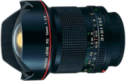

Plus qu'un simple signe de qualité d'image professionnelle supérieure, la ligne rouge autour du barillet des objectifs de la série L de Canon est synonyme d'efforts démesurés, mais aussi de processus de conception et de fabrication révolutionnaires, notamment en ce qui concerne le verre. Comme en atteste la chronologie ci-dessous, le développement des objectifs de la série L de Canon a apporté son lot de nouveautés : premier élément en cristal artificiel de fluorine intégré dans un objectif, fabrication de lentilles asphériques haute précision, très grandes ouvertures, angles de vue hors pair, premier objectif à zoom ultra-puissant au monde et revêtements antireflet dont la structure est plus fine que la longueur d'onde de la lumière visible.
Si les performances, l'ergonomie, la robustesse et la qualité professionnelle des objectifs de la série L ne font plus aucun doute, ce n'est pas toujours le cas de la recherche, de la précision et de la passion stimulant le développement de la série L. Avec ces innovations, le but est « d'élargir les possibilités des photographes en faisant appel à la liberté de pensée, mais sans être limité par le bon sens ».
L'histoire des objectifs de la série L de Canon est fascinante à lire. Il est vrai que les optiques ne présentent plus aucun mystère scientifique. Toutefois, se dire que les objectifs ne peuvent plus évoluer serait une grave erreur.
Au contraire, tout s'accélère : les verriers développent de nouveaux matériaux toujours plus originaux, et de nouveaux processus de conception et de production sont développés, transformant ainsi les processus de fabrication des objectifs. Il s'agit d'une période passionnante pour les concepteurs d'objectifs et les photographes.
1969 : FL-F 300mm f/5.6
Premier objectif Canon fabriqué à base de fluorine
La fluorine présente d'excellentes propriétés pour les objectifs, notamment la suppression totale de toute aberration chromatique résiduelle et la possibilité de réduire la longueur totale de l'objectif. Son usage est très courant pour les super-téléobjectifs actuels de la série L de Canon. Toutefois, la fluorine naturelle comporte trop d'impuretés pour l'utiliser dans la fabrication des objectifs. En effet, il est impossible d'obtenir de grands cristaux. En 1969, Canon a développé une technologie pour créer artificiellement des cristaux purs, permettant ainsi la production du modèle FL-F 300mm f/5.6, le tout premier objectif fabriqué à base de fluorine, un téléobjectif ultra-compact révolutionnaire pour son époque.
1982 : FD 14mm f/2.8L
Ultra grand-angle généré par un outil de conception original
Les objectifs à ultra grand-angle requièrent des designs complexes et des techniques de fabrication sophistiquées. Le modèle FD 14mm f/2.8L a été développé à l'aide d'un outil de conception interne. Sa lentille asphérique élimine toute distorsion et en fait le plus grand objectif à focale fixe rectiligne de la gamme FD.